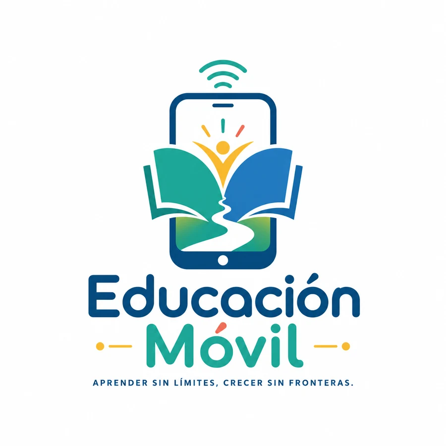

Diagnóstico inicial
Detecta fortalezas y contenidos por reforzar.
Una ruta completa desde preescolar hasta secundaria con aprendizaje por proyectos, práctica guiada, evaluaciones, materiales imprimibles y apoyos inclusivos.
Contenido original organizado con referencia a los campos y programas de la SEP. No sustituye la inscripción escolar ni expide certificados oficiales.

Prueba la cuenta simulada para ver horario, progreso, logros, recomendaciones y panel del tutor.
Usuario estudiante: luna · contraseña: demo123
Selecciona nivel y grado para ver temas, proyectos, semanas y avance. El sistema distribuye el contenido en nueve bloques de cuatro semanas.
Cada grado muestra únicamente las materias disponibles. Las lecciones ahora combinan cálculos, respuestas abiertas, decisiones, ordenamiento de procesos y actividades prácticas, además de worksheets distintos.
Investigación, comunidad, ciencia, comunicación, tecnología, finanzas y bienestar con productos que pueden guardarse en el portafolio.
Elige un grado y genera un diagnóstico breve. La demo identifica áreas para reforzar y propone una ruta, sin calificaciones públicas.
Detecta fortalezas y contenidos por reforzar.
Cada clase incluye una pregunta con retroalimentación.
Conserva proyectos, explicaciones y mejoras.
Permite repetir sin penalización y recomienda práctica.
Accesos externos a libros, programas y recursos oficiales. Se abren en una pestaña nueva y pertenecen a sus instituciones responsables.
Cada grado tiene una ruta anual de 36 sesiones: comprender un valor, practicarlo mediante diálogo y demostrarlo con una acción segura. No promueve una sola forma de familia; puede trabajarse con madres, padres, tutores, cuidadores o adultos responsables.
Respeto, responsabilidad, empatía, honestidad, gratitud, solidaridad, autocuidado, perseverancia, justicia, inclusión, cuidado del ambiente y cultura de paz.
Crea entre tres y cinco acuerdos claros, realistas y revisables.
Registra una persona, acción o aprendizaje que quieras reconocer.
Alto para calmar, pienso opciones y avanzo con diálogo o apoyo.
Distribuye tareas según edad, tiempo y capacidad; no según estereotipos.
Comunicación, matemáticas funcionales, emociones, autonomía, atención, motricidad, ciencias y convivencia. Se puede responder hablando, señalando, escribiendo, dibujando o realizando una acción.
Funciones nuevas que complementan la ruta académica y ayudan a estudiar con autonomía.
Crea una semana equilibrada según tiempo disponible y grado.
Registra minutos, palabras nuevas, resumen y opinión.
Pomodoro flexible, recuperación activa, mapas y práctica espaciada.
Privacidad, fuentes confiables, huella digital y convivencia.
Ahorro, presupuesto, crédito, consumo y prevención de fraudes.
Rutas de inglés y práctica comunicativa por nivel.
76 paquetes y cuadernillos para trabajar sin internet.
Abrir bibliotecaGenerador de retos creativos, físicos, científicos y sin pantalla.
La futura versión con servidor deberá validar tutores, proteger datos de menores y coordinar entregas mediante organizaciones o puntos seguros.
Novedades, recursos, actividades, campañas y avances de Educación Móvil.